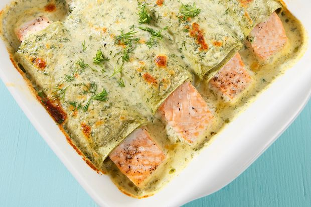

Lachs-Cannelloni

Zutaten
- Salz
- 4 Lasagneblätter grün
- 4 Tranchen Lachsfilets roh, à je ca. 80 g
- schwarzer Pfeffer aus der Mühle
- 1 dl Doppelrahm
- 1 dl Gemüsebouillon
- 1/2 Bund Dill
- 40 g Parmesan gerieben
- Butter für die Form
Zubereitung
- In einer mittleren Pfanne reichlich Wasser aufkochen. Salzen. Dann die Lasagneblätter hineingeben und bissfest garen. Eine Schüssel mit kaltem Wasser bereitstellen. Die Lasagneblätter sorgfältig herausheben und in die Schüssel geben; auf diese Weise kleben sie nicht aneinander.
- Während die Lasagneblätter garen, wenn nötig dunkle oder graue Stellen an den Lachstranchen sorgfältig abschneiden. Mit frisch gemahlenem Pfeffer kräftig würzen.
- Doppelrahm und Bouillon in eine kleine Pfanne geben und um etwa 1⁄ 3 einkochen lassen. Inzwischen einige Dillblättchen für die Garnitur beiseitestellen. Restlichen Dill fein hacken. Die Hälfte des Käses zur Sauce geben und unter Rühren schmelzen lassen.
- Den Dill beifügen und die Sauce mit Salz sowie Pfeffer abschmecken. Beiseite stellen, aber nicht kühlen.
- Die Lasagneblätter auf ein Küchentuch geben und trockentupfen. Dann jeweils 1 Lachstranche in 1 Lasagneblatt wickeln. Nebeneinander in eine ausgebutterte Gratinform legen. Kühl stellen.
- Den Backofen auf 220 Grad vorheizen.
- Die Sauce nochmals aufkochen. Über die Lachstranchen verteilen und alles mit dem restlichen Käse bestreuen.
- Die Lachs-Cannelloni im 220 Grad heißem Ofen auf der mittleren Rille 10–12 Minuten überbacken. Vor dem Servieren mit den Dillblättchen garnieren. Sofort sehr heiß servieren.
Nährwertangaben
- Pro Portion: 705 kKalorien
- 42g Eiweiss
- 19g Kohlenhydrate
- 49g Fett
© Annemarie Wildeisens KOCHEN – https://www.wildeisen.ch/